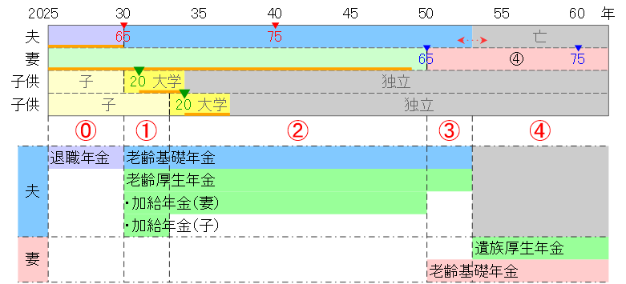
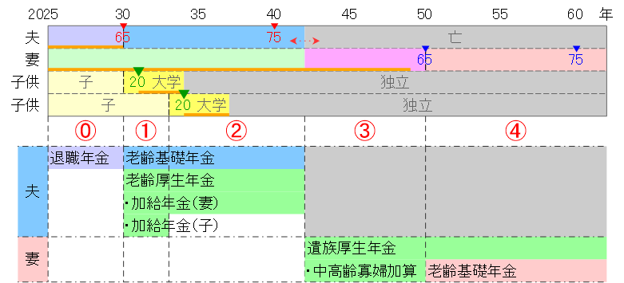

公的年金
以下の条件を満たす家庭の公的年金を整理する。- 元会社員の夫と専業主婦の妻と子供で構成され、夫が妻より先に亡くなる。
- 夫は会社員として25年以上厚生年金保険料を納付している（老齢厚生年金受給権者である）。
- 障害認定者はいない。
- 夫と妻の老齢年金受給開始は65歳とする。
- 退職年金（退職金の一部）を60～65歳に受け取る。退職年金は所得税法上「公的年金等」として扱われる。
家族状況と受給年金の種類
家族状況に応じた受給年金の種類を整理する。妻65歳（年金受給開始）以降に夫が亡くなる場合
- 退職年金を60～65歳に受け取る。
- 老齢基礎年金と老齢厚生年金は、65歳から亡くなるまで受給できる。受給には申請が必要（65歳誕生日前日以降）。
- 老齢基礎年金と老齢厚生年金は、それぞれ受給開始年齢を前後にずらすことができる（すらした場合の話は省略）。
- 加給年金は、65歳未満の妻や子がいる場合に、老齢厚生年金に定額が加算される形で受給する。受給には申請が必要。
- 遺族厚生年金は、老齢厚生年金受給権者の夫が亡くなった場合に、妻（または子）が翌月分から受給できる。受給には申請が必要。
- 遺族厚生年金は非課税であり所得には含まない。他に収入がなければ確定申告も不要。
- 子は、高校卒業する3月（18歳到達年度末日）までの子供を指す。
妻65歳（年金受給開始）より前に夫が亡くなる場合
- 退職年金を60～65歳に受け取る。
- 老齢基礎年金と老齢厚生年金は、65歳から亡くなるまで受給できる。受給には申請が必要（65歳誕生日前日以降）。
- 老齢基礎年金と老齢厚生年金は、それぞれ受給開始年齢を前後にずらすことができる（すらした場合の話は省略）。
- 加給年金は、65歳未満の妻や子がいる場合に、老齢厚生年金に定額が加算される形で受給する。受給には申請が必要。
- 遺族厚生年金は、老齢厚生年金受給権者の夫が亡くなった場合に、妻（または子）が翌月分から受給できる。受給には申請が必要。
- 中高齢寡婦加算は、夫が亡くなった時に40歳～65歳で同一家計の子がいない妻が、遺族厚生年金に定額が加算される形で受給する。
- 遺族厚生年金は非課税であり所得には含まない。他に収入がなければ確定申告も不要。
- 子は、高校卒業する3月（18歳到達年度末日）までの子供を指す。
子供が高校卒業前に夫が亡くなる場合
- 退職年金を60～65歳に受け取る（途中で亡くなった場合の取り扱いは要確認）。
- 遺族基礎年金は、老齢厚生年金受給権者の夫が亡くなった場合に、同一生計の子のある妻（または子）が翌月分から受給できる。受給には申請が必要。
- 遺族厚生年金は、老齢厚生年金受給権者の夫が亡くなった場合に、妻（または子）が翌月分から受給できる。受給には申請が必要。
- 中高齢寡婦加算は、夫が亡くなった時に40歳～65歳で同一家計の子がいない妻が、遺族厚生年金に定額が加算される形で受給する。
- 遺族基礎年金と遺族厚生年金は合わせて受給できる。
- 遺族基礎年金・遺族厚生年金は非課税であり所得には含まない。他に収入がなければ確定申告も不要。
- 子は、高校卒業する3月（18歳到達年度末日）までの子供を指す。
- 老齢基礎年金は、65歳から亡くなるまで受給できる。受給には申請が必要（65歳誕生日前日以降）。
受給年金額の算出
以下の前提で受給年金額を算出する。- 60歳以降も国民年金に任意加入することで保険料納付期間をできるだけ長くして、受給する老齢基礎年金額を増やす。
- 国民年金保険料に加え、月400円の付加年金保険料を納付することにより、受給する老齢基礎年金額を増やす。
- 夫と妻の老齢年金受給開始は65歳とする。
算出に必要となる規定値
規定値ファイルを[ファイルの選択]ボタンから指定または上の領域にドラッグ＆ドロップしてください。
規定値リストを上の領域にコピー＆ペーストまたは直接入力することもできます。
作成した規定値リストをダウンロードできます。 →
規定値リストを上の領域にコピー＆ペーストまたは直接入力することもできます。
作成した規定値リストをダウンロードできます。 →
強調値は改定される可能性がある値
（初期値は2024年の規定値）
退職年金
- 2025年4月から2030年3月まで月額円を受け取る。
- 2025年の退職年金額（4～12月分）は円（ × 9）。
- 2026～2029年⓪の退職年金額は円（ × 12）。
- 2030年の退職年金額（1～3月分）は円（ × 3）。
老齢基礎年金
- 老齢基礎年金の年金額は、保険料を40年間（20～60歳の480ヶ月）納付した場合は老齢基礎年金満額円で、各人の保険料納付期間に比例した年金額になる。
- 老齢基礎年金額 ＝ 老齢基礎年金満額円 × 年金保険料納付月数 / 480
- 保険料納付期間が480ヶ月（40年）未満の場合は、60～65歳（5年）の間に国民年金に任意加入して、保険料納付期間を最大の40年に近づけることができる。
- 夫60歳前月時点の保険料納付期間が419ヶ月（1990年4月～2025年2月）の場合、 最大の60ヶ月（5年）任意加入すると年金保険料納付月数がヶ月となり、追加支払い分は円 （国民年金保険料月額円 × 60ヶ月）で、 受給する老齢基礎年金額が円 （老齢基礎年金満額円 × 60ヶ月 / 480） 増える。 10年（65～75歳）以上受給すれば＋（得）になるため、資産的に余裕があるなら任意加入して長生きリスクに備えた方が良い。
- 妻60歳前月時点の保険料納付期間が440ヶ月（2009年3月～2045年10月）の場合、 40ヶ月（3年4カ月）任意加入すると年金保険料納付月数が最大のヶ月となり、追加支払い分は円 （国民年金保険料月額円 × 40ヶ月）になり、 受給する老齢基礎年金額が円 （老齢基礎年金満額円 × 40ヶ月 / 480） 増える。 10年（65～75歳）以上受給すれば＋（得）になるため、資産的に余裕があるなら任意加入して長生きリスクに備えた方が良い。
- 国民年金支払い時に付加保険料（月円）を納めると、円×付加保険料納付月数が、老齢基礎年金に上乗せされる。
- 付加保険料を円（円×12ヶ月）納付すると、毎年円（円×12ヶ月）が上乗せされる。 2年（65～67歳）以上受給すれば＋（得）になるため、付加保険料は最大限納付すべきである。
- 夫の付加保険料納付月数がヶ月（2024年7月～2030年2月）の場合、 付加保険料円（円 × ヶ月）納付で、 毎年円（円×ヶ月）が上乗せされる。
- 妻の付加保険料納付月数がヶ月（2024年7月～2045年10月）の場合、 付加保険料円（円 × ヶ月）納付で、 毎年円（円×ヶ月）が上乗せされる。
- 夫が最大限任意加入＆付加保険料納付した場合の老齢基礎年金額は円（老齢基礎年金満額円 × 年金保険料納付月数ヶ月 / 480＋付加年金円）。
- 妻が最大限任意加入＆付加保険料納付した場合の老齢基礎年金額は円（老齢基礎年金満額円 × 年金保険料納付月数ヶ月 / 480＋付加年金円）。
- 老齢基礎年金受給開始は65歳誕生月翌月。
- 2030年（夫65歳）の夫老齢基礎年金額（4～12月分）は円 （ × 9/12）。
- 2031年以降①②③の夫老齢基礎年金額は円。
- 2050年（妻65歳）の妻老齢基礎年金額（12月分）は円 （ × 1/12）。
- 2051年以降③④の妻老齢基礎年金額は円。
老齢厚生年金
- 老齢厚生年金の年金額（2024年10月年金事務所計算）は、円で、
そのうち報酬比例部分は円。
- 老齢厚生年金の年金額は、厚生年金加入時（会社員期間）の報酬額に応じて計算される。計算式が複雑なので省略するが、年金事務所で計算してもらえる。
- 65歳未満の妻がいる場合は、老齢厚生年金に加算される形で加給年金円を受給できる。
- （計算式）加給年金円 ＋ 配偶者特別加算円 ＝ 円。
- 子がいる場合は、老齢厚生年金に加算される形で加給年金円を受給できる。
- 老齢厚生年金受給開始は65歳誕生月翌月、子は18歳到達年度末（高校卒業3月）迄。
- 2030年（夫65歳）の老齢厚生年金額（4～12月分）は円 （老齢厚生年金 × 9/12 ＋ 妻加給年金 × 9/12 ＋ 子加給年金 × 9/12）。
- 2031～2032年①の老齢厚生年金額は円 （老齢厚生年金 ＋ 妻加給年金 ＋ 子加給年金）。
- 2033年（第2子高校卒業）の老齢厚生年金額は円 （老齢厚生年金 ＋ 妻加給年金 ＋ 子加給年金 × 3/12）。
- 2034～2049年②の老齢厚生年金額は円 （老齢厚生年金 ＋ 妻加給年金）。
- 2050年（妻65歳）の老齢厚生年金額は円 （老齢厚生年金 ＋ 妻加給年金 × 11/12）。
- 2051年以降③の老齢厚生年金額は円。
遺族厚生年金
- 遺族厚生年金の年金額は夫の老齢厚生年金の報酬比例部分円の4分の3で、 円。
- 中高齢寡婦加算の年金額は円。
- 遺族厚生年金受給開始は死亡月翌月（ここでは死亡月を12月と仮定する）。
妻65歳（年金受給開始）以降に夫が亡くなる場合
- 夫死亡翌年以降④の遺族厚生年金額は円。
妻65歳（年金受給開始）より前に夫が亡くなる場合
- 夫死亡翌年～2049年③の遺族厚生年金額は円 （遺族厚生年金 ＋ 中高齢寡婦加算）。
- 2050年（妻65歳）の遺族厚生年金額は円 （遺族厚生年金 ＋ 中高齢寡婦加算 × 11/12）。
- 2051年以降④の遺族厚生年金額は円。
子供が高校卒業前に夫が亡くなる場合
- 夫死亡翌年～2032年①②の遺族厚生年金額は円。
- 2033年（第2子高校卒業）の遺族厚生年金額は円。 （遺族厚生年金 ＋ 中高齢寡婦加算 × 9/12）。
- 2034～2049年③の遺族厚生年金額は円 （遺族厚生年金 ＋ 中高齢寡婦加算）。
- 2050年（妻65歳）の遺族厚生年金額は円 （遺族厚生年金 ＋ 中高齢寡婦加算 × 11/12）。
- 2051年以降④の遺族厚生年金額は円。
遺族基礎年金
- 子のある妻が受け取る場合の年金額は
円＋円×子の数（子が1～2人の場合）。
- 3人目以降の子は加算額が異なる。また妻がいない場合は子が受け取るがその計算方法は省略。
- 夫死亡翌年～2029年①の遺族基礎年金額は円 （遺族基礎年金 ＋ 子加算 × 2）。
- 2030年（第1子高校卒業）の遺族基礎年金額は円。 （遺族基礎年金 ＋ 子加算 × 15/12）。
- 2031～2032年②の遺族基礎年金額は円。 （遺族基礎年金 ＋ 子加算）。
- 2033年（第2子高校卒業）の遺族基礎年金額は円。 （遺族基礎年金 × 3/12 ＋ 子加算 × 3/12）。
家族状況と受給年金額
家族状況に応じた年単位の受給年金額を算出する。妻65歳（年金受給開始）以降に夫が亡くなる場合
- 2025年の夫受給年金額は円（退職年金4～12月分）。
- 2026～2029年⓪の夫受給年金額は円（退職年金）。
- 2030年（夫65歳）の夫受給年金額は円 （退職年金1～3月分 ＋ 老齢基礎年金4～12月分 ＋ 老齢厚生年金4～12月分）。
- 2031～2032年①の夫受給年金額は円 （老齢基礎年金 ＋ 老齢厚生年金）。
- 2033年（第2子高校卒業）の夫受給年金額は円 （老齢基礎年金 ＋ 老齢厚生年金）。
- 2034～2049年②の夫受給年金額は円 （老齢基礎年金 ＋ 老齢厚生年金）。
- 2050年（妻65歳）の夫受給年金額は円 （老齢基礎年金 ＋ 老齢厚生年金）。
- 2050年（妻65歳）の妻受給年金額は円（老齢基礎年金12月分）
- 2051年以降夫生存中③の夫受給年金額は円 （老齢基礎年金 ＋ 老齢厚生年金）。
- 2051年以降夫生存中③の妻受給年金額は円（老齢基礎年金）。
- 夫死亡翌年以降④の妻受給年金額は円 （遺族厚生年金 ＋ 老齢基礎年金）。
- 夫死亡翌年以降④の妻課税年金額は円（老齢基礎年金）。
妻65歳（年金受給開始）より前に夫が亡くなる場合
- 2025年の夫受給年金額は円（退職年金4～12月分）。
- 2026～2029年⓪の夫受給年金額は円（退職年金）。
- 2030年（夫65歳）の夫受給年金額は円 （退職年金1～3月分 ＋ 老齢基礎年金4～12月分 ＋ 老齢厚生年金4～12月分）。
- 2031～2032年①の夫受給年金額は円 （老齢基礎年金 ＋ 老齢厚生年金）。
- 2033年（第2子高校卒業）の夫受給年金額は円 （老齢基礎年金 ＋ 老齢厚生年金）。
- 2034以降夫生存中②の夫受給年金額は円 （老齢基礎年金 ＋ 老齢厚生年金）。
- 夫死亡翌年～2049年③の妻受給年金額は円（遺族厚生年金額）。
- 2050年（妻65歳）の妻受給年金額は円 （遺族厚生年金 ＋ 老齢基礎年金12月分）。
- 2051年以降④の妻受給年金額は円 （遺族厚生年金 ＋ 妻老齢基礎年金）。
- 夫死亡翌年～2049年の妻課税年金額は0円。
- 2050年（妻65歳）の妻課税年金額は円（老齢基礎年金12月分）。
- 2051年以降④の妻課税年金額は円（老齢基礎年金）。
子供が高校卒業前に夫が亡くなる場合
- 2025年の夫受給年金額は円（退職年金4～12月分）。
- 2026以降夫生存中⓪の夫受給年金額は円（退職年金）。
※ 夫死亡による退職年金未払い分の取り扱いは要確認（とりあえず計算に入れないておく）。 - 夫死亡翌年～2029年①の妻受給年金額は円
（遺族厚生年金 ＋ 遺族基礎年金）。
- 2030年（第1子高校卒業）の妻受給年金額は円
（遺族厚生年金 ＋ 遺族基礎年金）。
- 2031～2032年②の妻受給年金額は円
（遺族厚生年金 ＋ 遺族基礎年金）。
- 2033年（第2子高校卒業）の妻受給年金額は円
（遺族厚生年金 ＋ 遺族基礎年金）。
- 2034～2049年③の妻受給年金額は円（遺族厚生年金）。
- 2050年（妻65歳）の妻受給年金額は円 （遺族厚生年金 ＋ 老齢基礎年金12月分）。
- 2051年以降④の妻受給年金額は円 （遺族厚生年金 ＋ 老齢基礎年金）。
- 夫死亡翌年～2049年の妻課税年金額は0円。
- 2050年（妻65歳）の妻課税年金額は円（老齢基礎年金12月分）。
- 2051年以降④の妻課税年金額は円（老齢基礎年金）。
国民年金保険料納付額
- 国民年金は20歳以上60歳未満の人が加入する。ただし会社員は国民年金ではなく厚生年金に加入する。
- 年金（国民年金＋厚生年金）加入月数が一定以下の人は、60歳以上も国民年金に任意加入でき、受給する老齢基礎年金額を増やすことができる。 また、支払った保険料は社会保険料控除の対象となり、所得税が減額される。
- 収入のない子供でも20歳以上になったら国民年金に加入して保険料を支払う必要があるが、就職して会社員になったら厚生年金に切り替わる。 厚生年金に加入することで国民年金から自動的に脱退するため脱退手続きは不要。
算出方法
以下の前提で年ごとの納付額を算出する。- 国民年金保険料は月円。 付加保険料は月円。
- 夫は2030年2月まで加入（60歳から60ヶ月任意加入）、妻は2049年2月まで加入（60歳から40ヶ月任意加入）し、夫と妻は国民年金保険料＋付加保険料を納付する。
- 子供は20歳～22歳大学卒業まで加入し、国民年金保険料を納付する（親が納付する）。
- 第1子大学卒業と第2子20歳到達が同じため、第1子20歳～第2子大学卒業まで子供1人分の国民年金保険料を親が納付することになる。
- 夫生存中は夫が世帯加入者全員分の国民年金保険料を納付する。
妻65歳（年金受給開始）以降に夫が亡くなる場合
- 2025～2029年⓪の夫国民年金保険料納付額は円 （ × 24 + × 24）。
- 2030年⓪と①の間（2月まで夫と妻、3月から妻が加入）の夫国民年金保険料納付額は円 （ × 14 + × 14）。
- 2031年①と②の間（10月まで妻、11月から妻と子供1人が加入）の夫国民年金保険料納付額は円 （ × 14 + × 12）。
- 2032～2036年②（妻と子供1人が加入）の夫国民年金保険料納付額は円 （ × 24 + × 12）。
- 2037年②と③の間（3月まで妻と子供1人、4月から妻が加入）の夫国民年金保険料納付額は円 （ × 15 + × 12）。
- 2038～2048年③（妻が加入）の夫国民年金保険料納付額は円 （ × 12 + × 12）。
- 2049年（2月まで妻が加入）の夫国民年金保険料納付額は円 （ × 2 + × 2）。
妻65歳（年金受給開始）より前に夫が亡くなる場合
- 2025～2029年⓪の夫国民年金保険料納付額は円 （ × 24 + × 24）。
- 2030年⓪と①の間（2月まで夫と妻、3月から妻が加入）の夫国民年金保険料納付額は円 （ × 14 + × 14）。
- 2031年①と②の間（10月まで妻、11月から妻と子供1人が加入）の夫国民年金保険料納付額は円 （ × 14 + × 12）。
- 2032～2036年②（妻と子供1人が加入）の夫国民年金保険料納付額は円 （ × 24 + × 12）。
- 2037年②と③の間（3月まで妻と子供1人、4月から妻が加入）の夫国民年金保険料納付額は円 （ × 15 + × 12）。
- 2038以降夫生存中③（妻が加入）の夫国民年金保険料納付額は円 （ × 12 + × 12）。
- 夫死亡翌年～2048年④（妻が加入）の妻国民年金保険料納付額は円 （ × 12 + × 12）。
- 2049年（2月まで妻が加入）の妻国民年金保険料納付額は円 （ × 2 + × 2）。
子供が高校卒業前に夫が亡くなる場合
- 2025以降夫生存中⓪の夫国民年金保険料納付額は円 （ × 24 + × 24）。
- 夫死亡翌年～2030年①の妻国民年金保険料納付額は円 （ × 12 + × 12）。
- 2031年①と②の間（10月まで妻、11月から妻と子供1人が加入）の妻国民年金保険料納付額は円 （ × 14 + × 12）。
- 2032～2036年②（妻と子供1人が加入）の妻国民年金保険料納付額は円 （ × 24 + × 12）。
- 2037年②と③の間（3月まで妻と子供1人、4月から妻が加入）の妻国民年金保険料納付額は円 （ × 15 + × 12）。
- 2038～2048年③（妻が加入）の妻国民年金保険料納付額は円 （ × 12 + × 12）。
- 2049年（2月まで妻が加入）の妻国民年金保険料納付額は円 （ × 2 + × 2）。